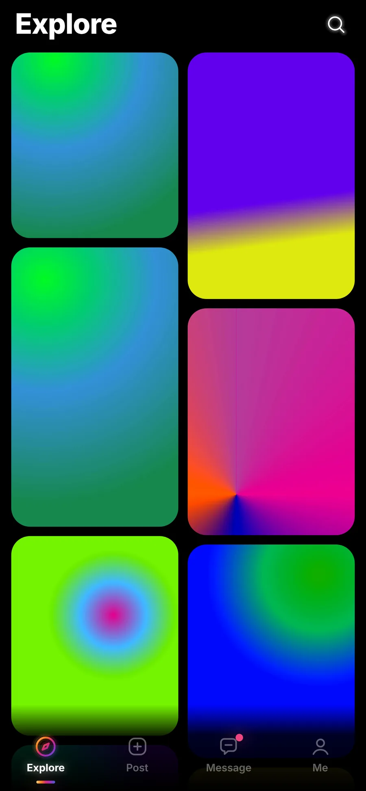
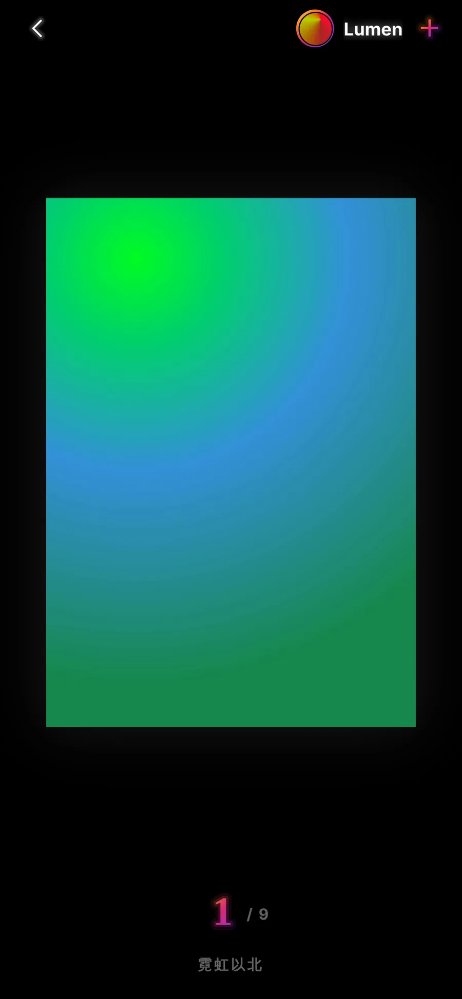
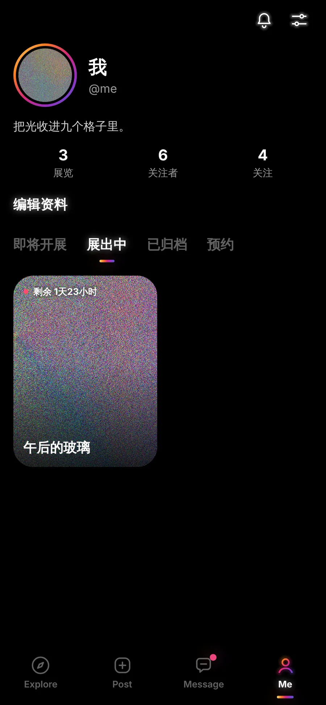
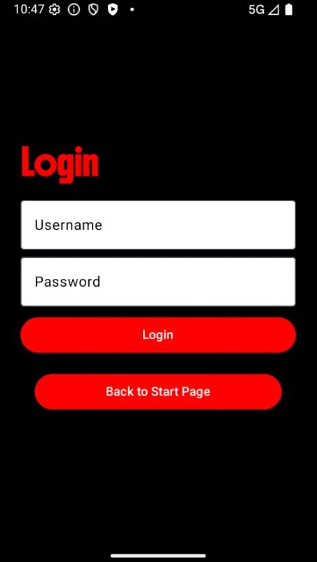
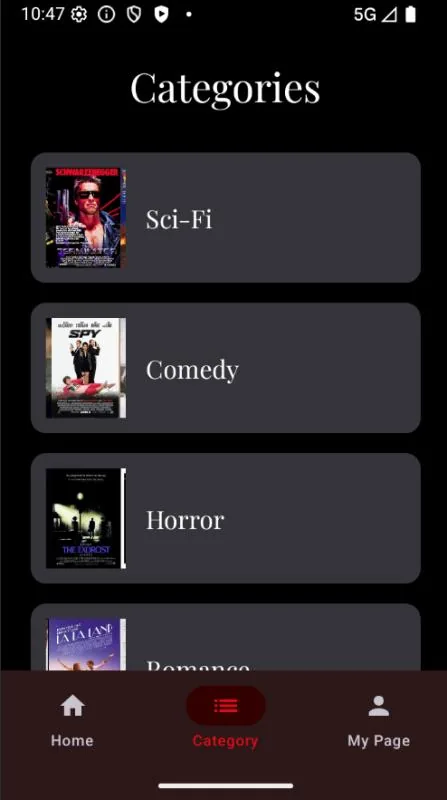
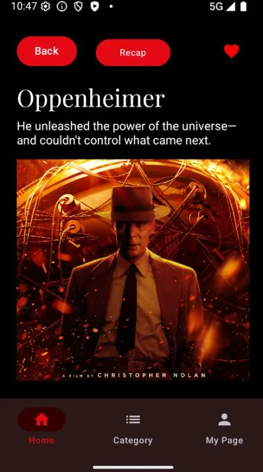

作品集 · 2026Portfolio · 2026
从找客户到发邮件，
我给自己做了整套工具。
I built my own sales toolkit —
from prospect research to outreach.
懂产品，也会写代码。我习惯先听清客户的痛点，再把它变成一个真正能用的工具，然后讲清楚它值在哪里。 I understand products and I write code. I start from the customer's pain point, turn it into a tool that actually works, and make its value obvious.
- 5个独立开发的产品products built solo
- 3个团队项目team projects
- 4种语言：普通话 / 粤语 / 英语 / 日语languages: Mandarin / Cantonese / English / Japanese
01
销售工具箱The Sales Toolkit
调研客户、写开发信、筛选机会：我把销售流程里最费时间的三件事，各做成了一个工具。 Researching accounts, writing outreach, filtering opportunities: I turned the three most time-consuming parts of the job into three tools.
Seek · 企业信息检索助手Prospect research assistant
30 秒，看懂一家潜在客户。 Know your prospect in 30 seconds.
痛点The problem
拜访客户前要翻官网、新闻稿、年报，一家公司就得花半小时。信息零散，还不知道哪句靠得住。 Account prep means digging through websites, press releases and annual reports — half an hour per company, and you never know which claim to trust.
方案The solution
输入公司名和网址，Seek 自动抓取资料，生成「概况 / 业务线 / 产品 / 目标市场」四段画像，每句话都附上来源原文。 Enter a company name and a few URLs. Seek reads the pages and writes a four-part profile — overview, business lines, products, target markets — with every sentence cited.
价值The value
找不到依据的内容自动剔除，不会把编造的信息带进客户会议。数据和密钥只留在本机。 Anything without a source is removed automatically, so nothing made-up reaches a client meeting. Data and keys never leave your machine.
- 4段结构化画像sections per profile
- 100%结论附来源of claims cited
- 4+家大模型可选LLM providers
- Win / Mac一键安装installers
Python · FastAPI · RAG · ChromaDB · Claude / OpenAI SDK · pywebview · PyInstaller · GitHub Actions
Bard · 多语言商务邮件助手Multilingual business email
一份要点，三种语言的专业开发信。 One brief. Three languages. Ready to send.
痛点The problem
跨国客户要用英文、日文沟通，语气和礼仪很难拿捏；产品名、术语也经常前后写得不一样。 Writing to clients in English or Japanese means guessing at tone and etiquette — and product names drift from one email to the next.
方案The solution
用任何语言写下要点，Bard 生成完整邮件。之后说一句「再正式一点」「加一句可提供样品」就能改，每一版都保留。 Jot down the key points in any language and Bard writes the full email. Then just say "more formal" or "offer a free sample" — every version is kept.
价值The value
按各国商务习惯来写，比如日语敬语、中文的「此致 敬礼」。三语术语表保证全团队对外口径一致。 Each language follows its own business conventions, from Japanese keigo to Chinese sign-offs. A shared trilingual glossary keeps the whole team on-message.
- 3种语言：中 / 英 / 日languages: ZH / EN / JA
- 9种销售场景模板sales scenario templates
- 6 × 3种语气 × 正式程度tones × formality levels
- 7+家模型服务可接入model providers
Electron · React · TypeScript · SQLite · Claude / OpenAI / Gemini SDK · Vitest · electron-builder
GhostCheck · LinkedIn 幽灵职位检测插件Ghost-job detector for LinkedIn
这个职位，
真的在招人吗？
Is this job actually hiring?
痛点The problem
LinkedIn 上很多职位早就不招了，或者只是挂着撑门面，求职者投了也是白投。 Many LinkedIn postings are long closed or never meant to be filled. Every application to one is wasted time.
方案The solution
Chrome 插件，在职位旁边直接打上 🟢🟡🔴 标签，背后同时比对公司官方招聘系统、发布日期和网页存档。 A Chrome extension that puts a 🟢🟡🔴 badge next to each job, after checking the company's own careers site, posting dates and web archives.
价值The value
点开标签就能看到 3–5 条判断理由。免费、不用注册，全程在浏览器本地运行。 One click shows the 3–5 reasons behind the verdict. Free, no account, runs entirely in your browser.
- 224个真实职位实测real postings tested
- 0次匹配到错误职位wrong-job matches
- 10+类招聘平台接入careers platforms
- $0无服务器、无账号no server, no account
Chrome Extension MV3 · JavaScript · Transformers.js (on-device AI) · Fuzzy matching · Wikidata · GitHub Actions
02
产品与体验Products & Experiences
不只是工具：我也在做让用户愿意每天打开的产品。 Beyond tools: products people want to open every day.
app-1 · 多平台照片展览社交平台（开发中）Photo exhibition social app (in progress)
让每一组照片，都像一场限时展览。 Every photo set becomes a limited-time exhibition.



洞察The insight
无限滚动的信息流让好照片很快被淹没，用户也缺少「非看不可」的理由。 In an endless feed, great photos sink fast — and nobody has a reason to show up at a particular moment.
方案The solution
每场展览固定 9 张作品，需要提前预约开展，开展前 30 分钟锁定，到点才对观众开放，结束后归档。 Each exhibition is exactly 9 works, scheduled in advance, locked 30 minutes before opening, revealed at showtime and archived after.
价值The value
用限时和稀缺制造期待感，把「刷一刷」变成「准时来看」，这是一种做留存的产品思路。 Scarcity and timing turn scrolling into showing up — a retention mechanic built into the product itself.
React Native · Expo Router · TypeScript · Skia · Reanimated · Zustand · React Query · iOS / Android / Web
RogueAim · 肉鸽练枪游戏（网页原型）Roguelike aim trainer (web prototype)
把枯燥的练枪，变成停不下来的游戏。 Aim training you can't put down.
痛点The problem
Aim Lab 这类练枪软件很枯燥，大部分玩家练不了几天就放弃了。 Aim trainers are a grind. Most players quit within days.
方案The solution
把纯手动瞄准和 Roguelike 的成长系统结合：每一发都靠自己打中，但每一局都有新的流派搭配。 Pure manual aim meets roguelike progression: every hit is yours, but every run plays out a different build.
价值The value
灵敏度和 CS2 / Valorant 1:1 换算，玩家打开就能用自己的手感练，零迁移成本。 Sensitivity converts 1:1 from CS2 and Valorant, so players train with their real settings from the first second.
- 20波关卡waves
- 4场 Boss 战boss fights
- 50+种强化，3 大流派upgrades, 3 builds
- 1:1CS2 灵敏度CS2 sensitivity
Three.js · JavaScript (ES Modules) · Pointer Lock API · Web Audio · localStorage
03
团队项目Team Projects
和同学一起，从需求到交付完整走一遍。 Built with classmates, from requirements to delivery.
团队项目 · CapstoneTeam project · Capstone DeskSentry
不用穿戴，就能守护你的坐姿。 Posture protection — nothing to wear.
非穿戴式坐姿检测设备。桌面传感器实时测量人和屏幕的距离、坐了多久；网页仪表盘每秒最多刷新 10 次，太近或久坐时发出提醒，提醒阈值可以在网页上直接下发给设备。 A non-wearable posture monitor. A desk sensor tracks screen distance and sitting time; the web dashboard updates up to 10 times a second, flags bad posture, and pushes new alert thresholds straight to the device.
Node.js · Express · SQLite · SerialPort (UART) · Chart.js · 硬件 + 软件联动hardware + software
团队项目Team project MovieApp
找电影，按分类一键直达。 Find your next movie, by genre.
Android 原生电影大全 App：登录注册、按类型浏览、电影详情和一句话简介，喜欢的电影一键收藏到「我的」。 A native Android movie guide: sign in, browse by genre, read details and one-line synopses, and save favourites to your own page.



Kotlin · Jetpack Compose · Material 3 · Retrofit · json-server
团队项目Team project Text Adventure
你的每个选择，都会改写结局。 Every choice rewrites the ending.
仿《逆转裁判》的网页剧情推理游戏：视频演出、分支剧情、收集证据，存档和读档会同步到服务器。 A browser courtroom mystery inspired by Ace Attorney: video cutscenes, branching story, evidence to collect, and cloud save/load.
Vue 3 · Vue Router · Pinia · Tailwind CSS · Vite · json-server
需要一个既懂产品、
又能讲清楚价值的人？
Need someone who understands the product
and can sell its value?
欢迎聊聊。 Let's talk.